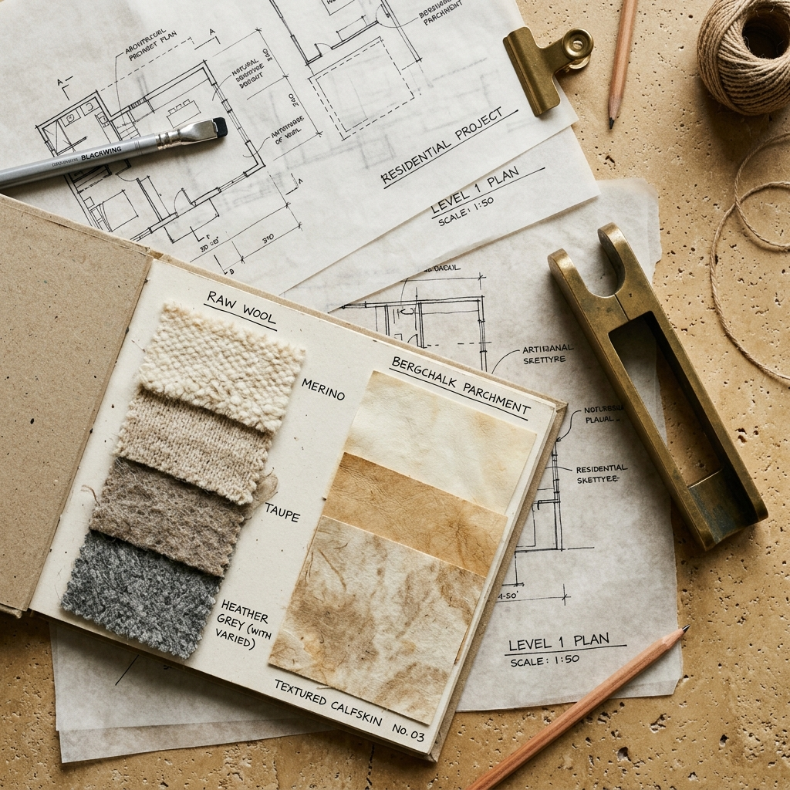

PLATE SPECIFICATION
Plate Title
Description of the selected plate and architectural provenance.
Atelier was conceived as an intellectual and aesthetic retreat from the breathless churning of digital commerce. We view every room, object, surface, and paragraph as an exercise in permanence.
When we strip away unnecessary ornaments, status indicators, and aggressive marketing jargon, what remains is the essence of hospitality and craft: proportion, weight, texture, and light. A dining table should feel rooted to the earth. A digital portfolio should breathe with the confidence of an art museum monograph.
Our practice spans architectural environments, limited-edition furniture commissions, and curatorial identity systems. We believe that true luxury does not shout for attention—it holds space with immovable composure.
“Form is not an arbitrary choice. It is the physical shadow cast by purpose.”

Materials chosen for how gracefully they patina over decades of tactile contact.
Quarried from ancient Tuscan beds, honed without glossy chemical varnishes. Porous, calm, and naturally temperature-regulating.
Air-dried for six seasons to relieve internal fiber tension. Finished with cold-pressed organic walnut oil and hand-buffed beeswax.
Woven on heritage mechanical looms in Normandy. Heavy 540 GSM weight, tactile slub texture, and exceptional acoustic absorption.
Hand-poured for table pulls, cutlery, and joint hardware. Intentionally unlacquered to develop a deep, personalized patina over generations.
Via Brera 18, 20121 Milano
Primary design studio & architectural material archive.
Higashiyama-ku, Kyoto 605-0862
Stoneware ceramic firing workshop & tea pavilion.
Rue de Turenne, 75003 Paris
Textile research studio & curatorial monographs.
Limmatquai 44, 8001 Zürich
Private hospitality consultations & commissions.